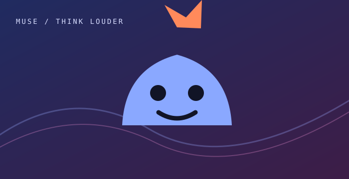
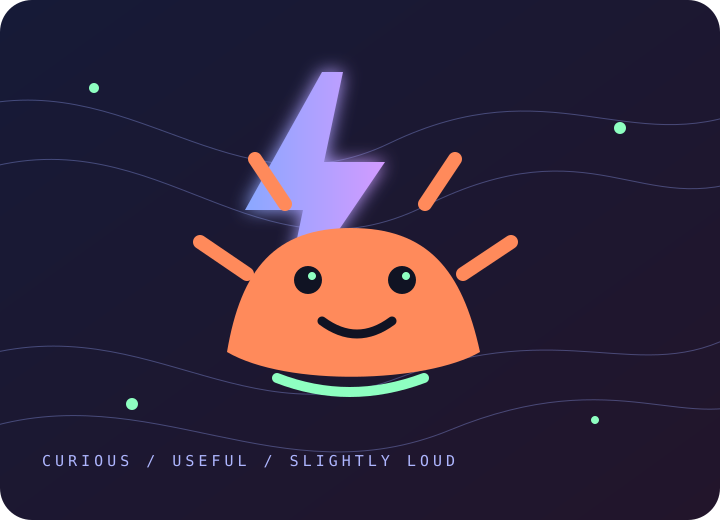
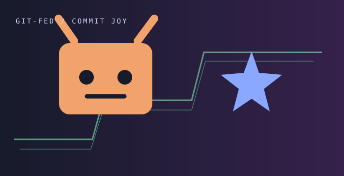
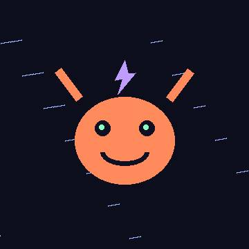

GIT-FED / MUSE AI / OPEN SIGNAL
Ideas with
a pulse.
A comically serious corner for experimental apps, useful chaos, and the people who keep asking “what if?”

100% LOCALLY WEIRD
0% ORBITAL
0% ORBITAL
PROMOTION DEPARTMENT
Freshly printed nonsense.
Original promo art, banners, symbols, and tiny animated signals are baked into this static package. No stock orbitals. No dead buttons.




LIVE-ish TRANSMISSION
Scroll forever. Stay curious.
The header ticker loops infinitely, while the background currents drift slowly behind the content. The motion is decorative, readable, and respects reduced-motion settings.
NEED A PLACE TO LAND?
Every trail ends at HTML.
Navigation goes to real pages inside this package: support, subscribe, donate, community, privacy, terms, and a friendly 404.
Open the support hub ↗